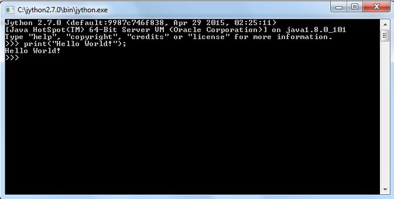

Jython — это реализация языка Python на языке Java. Первоначальное имя проекта — JPython, которое пришлось поменять из-за конфликта с одноименным проектом (имя было занято на хостинге sourceforge.net), одновременно и компилятор, и интерпретатор.
Официальный сайт: http://www.jython.org/

Created with the Personal Edition of HelpNDoc: Generate EPub eBooks with ease